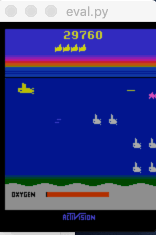

A re-implementation of Ape-X (Horgan et al., 2018) that collapses a
ZeroMQ/asyncio/multiprocessing stack of proxies and queues into a
single MPI_COMM_WORLD, with the replay buffer's segment
tree ported to C with optional OpenACC GPU offload.
Public Ape-X implementations distribute the learner, replay buffer,
actors, and evaluator across OS processes wired together with ZeroMQ
PUB/SUB and DEALER/ROUTER sockets, asyncio coroutines, and
Python multiprocessing queues. An 8-actor run needs proxy
processes and inter-process bridges on top of the logical roles, roughly
25 OS processes for what is conceptually four kinds of worker. This
project replaces the entire transport layer with a single MPI
communicator: every logical role is a fixed rank, and the whole system
launches with one mpirun command.
Rank 0 is the learner (GPU training loop, Double-DQN loss, weight
broadcast); rank 1 is the replay buffer (prioritized, single-threaded,
dispatched via non-blocking comm.iprobe()); ranks
2…N-2 are actors, each with its own exploration ε; rank
N-1 is the evaluator, running the greedy policy for unbiased score
logging. Five typed MPI message tags replace the five ZMQ sockets and
two queue types of the original: batches (actor → replay),
broadcast parameters (learner → actor/eval), sample requests and
sampled batches (learner ↔ replay), and priority updates
(learner → replay). A collective comm.Barrier() at
startup replaces a custom REQ/ROUTER liveness handshake, eliminating an
entire class of startup race conditions.
The prioritized replay buffer's segment tree, the hot path for both
sampling and priority updates, is ported to a C shared library
(native/segment_tree.c) with batched update/query
primitives. The same source compiles either as a plain CPU library or,
with #pragma acc directives left in place, as an
OpenACC-offloaded GPU build via the NVIDIA HPC SDK, giving roughly two
orders of magnitude speedup over the pure-Python reference, verified
correct to machine precision either way.
Porting the transport layer surfaced several latent bugs: the replay
buffer's naive list.append growth could overshoot its
configured capacity under high-throughput intake and is now a true
circular buffer; pickling Gym LazyFrame observations leaked
residual PyTorch tensor bytes into the wire payload and now materializes
to raw uint8 arrays first; undelivered parameter broadcasts
accumulated at the evaluator and are now drained each episode to keep
only the freshest weights (replicating ZMQ's CONFLATE semantics without
its silent drops); and leaked MPI.Request handles from the
learner's per-step priority isend calls are now explicitly
freed.

Evaluated on SeaquestNoFrameskip-v4 under a fixed 1200s
wall-clock budget, sweeping actor count n ∈ {1, 8, 16} against the
ZMQ baseline. The MPI port wins on actor intake throughput at every
actor count (1.39× at n=1, 1.59× at n=8, 2.31× at
n=16) and reaches substantially higher reward within the same budget,
trading a lower learner-batch ceiling (a single-threaded replay rank)
for much higher intake and better reward growth under wall-clock
constraints.